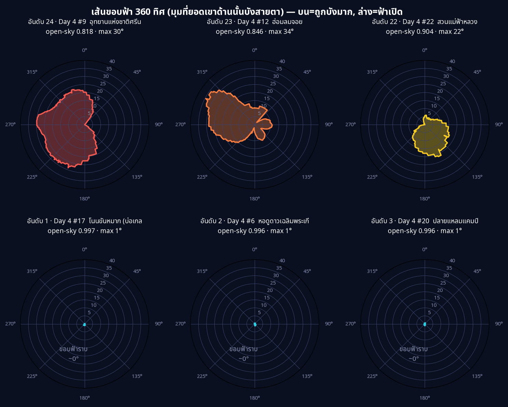
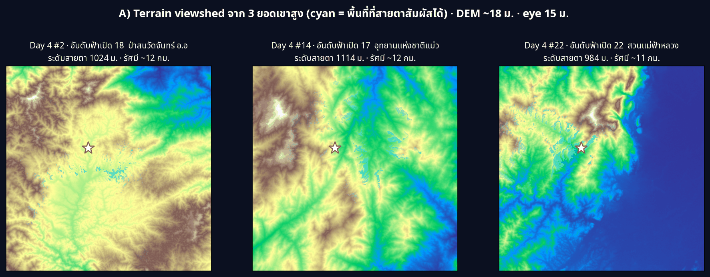

Day 5 · Senses: Sight — ท้องฟ้าเปิดแค่ไหนจากจุดดูดาว 24 แห่ง

Day 1 ปักจุด · Day 2 ลากเส้น · Day 3 วัดพื้นที่ · Day 4 จับกลุ่ม วันนี้ธีมทางการ Senses: Sight บอกตรง ๆ ว่า “How do you see something? Maybe map a viewshed?” — ผมจึงตอบคำถามว่า “จากจุดดูดาวแต่ละแห่งของไทย มองขึ้นไปบนฟ้าแล้วเห็นท้องฟ้าเปิดกว้างแค่ไหน และภูมิประเทศรอบข้างบังขอบฟ้าไว้เยอะเพียงใด”
ที่มาของแผนที่
ต่อจาก Day 4 ตรง ๆ: ผมมี 24 กลุ่ม (hotspot) ฟ้ามืด แต่ละกลุ่มผูกกับ “จุดอนุรักษ์ท้องฟ้ามืด ของ NARIT ที่ใกล้สุด” (คอลัมน์ nearest) ผมเอา หอดูดาวประจำกลุ่มทั้ง 24 แห่ง มาเป็น จุดสังเกตการณ์ (observer) แล้วคำนวณ viewshed จากแบบจำลองความสูง terrain (DEM)
DEM ใช้ terrarium tiles (AWS elevation-tiles-prod, มาจาก Copernicus GLO-30) — เป็น PNG ที่เข้ารหัสความสูงไว้ในช่องสี RGB, โหลดฟรีไม่ต้อง login, ความละเอียด ~18 ม. ที่ res 13
ผมคำนวณ “การมองเห็น” สองแบบที่คนละความหมายกัน:
- B) Sky-viewshed (เส้นขอบฟ้า) — จากจุดนั้นหมุนเข็มทิศครบ 360° แล้วถามว่า “แต่ละทิศ สันเขา/terrain ยกตัวสูงขึ้นจากสายตาไปกี่องศา” → ได้ เส้นขอบฟ้า (horizon profile) และ ค่า open-sky = สัดส่วนโดมท้องฟ้าที่อยู่ เหนือ ขอบฟ้า (ยิ่งเข้าใกล้ 1 = ฟ้าเปิดโล่ง, ยิ่งต่ำ = ภูเขารอบข้างบังมาก) นี่คือหัวใจของธีม Sight
- A) Terrain viewshed (มองพื้น) — จากยอดเขาสูง “สายตาสัมผัสพื้นดินบริเวณไหนได้บ้าง” (ทำ 3 จุดที่เป็นยอดเขาจริง เพื่อให้เห็นความต่างของภูมิประเทศ)
ผลลัพธ์

24 จุด · ค่า open-sky เฉลี่ย 0.951 · 3 จุดฟ้าเปิด ≥ 99% และ 2 จุดถูกบังจนเปิด < 90% สิ่งที่ผมไม่คาดคิดคือ คนที่ฟ้าเปิดที่สุดไม่ได้อยู่บนยอดเขา แต่เป็นที่ราบ/ชายทะเล:
| อันดับฟ้าเปิด | จุด | open-sky | ระดับสายตา |
|---|---|---|---|
| 1 | #17 โนนขันหมาก (อีสาน) | 0.997 | 133 ม. |
| 2 | #6 หอดูดาวเฉลิมพระเกียรติฯ ฉะเชิงเทรา | 0.996 | 13 ม. |
| 3 | #20 ปลายแหลมแคมป์ (ชายทะเล) | 0.996 | 6 ม. |
| 4 | #13 ภาวนานิเวศน์ แคมป์ | 0.989 | 55 ม. |
| 5 | #15 คชอาณาจักรสุรินทร์ | 0.989 | 129 ม. |
| ถูกบังมากสุด | จุด | open-sky | ขอบฟ้าเฉลี่ย | ขอบฟ้าสูงสุด |
|---|---|---|---|---|
| 1 | #9 อุทยานแห่งชาติศรีน่าน | 0.818 | 16.4° | 29.9° |
| 2 | #12 ฮ่อมลมจอย | 0.846 | 13.8° | 34.5° |
| 3 | #22 สวนแม่ฟ้าหลวง | 0.904 | 8.7° | 21.6° |
| 4 | #19 ขุนเขา ตำนานไพร รีสอร์ท | 0.909 | 8.2° | 15.2° |
| 5 | #11 วนอุทยานน้ำตกผาหลวง | 0.919 | 7.3° | 15.4° |
ข้อสรุปที่ขัดสัญชาตญาณ: “ฟ้ามืด” ไม่ได้แปลว่า “ฟ้าเปิด” — อุทยานฯ ศรีน่าน (#9) เป็น หนึ่งใน hotspot มืดจัดจาก Day 4 แต่กลับมีเส้นขอบฟ้าแย่ที่สุด (open-sky 0.818, ภูเขาบังสูงถึง ~30°) เพราะจุดนี้อยู่ใน หุบเขา มืดจากแสงไฟแต่โดนเขาล้อม → เหมาะส่องดาวเหนือศีรษะ (zenith) แต่เสียเปรียบมากเวลาจะดูดาว/ดาวเคราะห์ที่ ต่ำใกล้ขอบฟ้า
และ เส้นขอบฟ้ามีทิศทาง — กราฟกุหลาบ (roses) ด้านล่างบอกว่าจะเห็น “ทางไหน” บ้าง:

แถวบน = ถูกบังมากสุด 3 จุด (เส้นขยายออก = ภูเขาบังสูง) · แถวล่าง = ฟ้าเปิด ~0° (ขอบฟ้าราบทั้งวง)
ฝั่ง A) Terrain viewshed จาก 3 ยอดเขาสูงจริง (ป่าสนวัดจันทร์ · แม่่วงก์ · แม่ฟ้าหลวง, ระดับสายตา ~1 กม.) แสดงพื้นที่ cyan ว่าสายตาสัมผัสถึง:

ว่าด้วยตัวเลขบนรูป (ปรับปรุง 7 พ.ย. 2569)
รูปทั้งสามในโพสต์นี้ถูกวาดใหม่ มีแก้ 2 เรื่อง
- ตัวเลขในวงกลม ของเดิมเป็นเลขกลุ่มจาก Day 4 (
#17) ซึ่งเป็น ตัวระบุกลุ่ม ไม่ใช่ลำดับ ความฟ้าเปิด คนอ่านจึงตีความผิด ตอนนี้เลขใหญ่ = อันดับความฟ้าเปิด (1 = เปิดที่สุด) และ อันดับขนาดกลุ่มจาก Day 4 ย้ายไปเป็น#NNตัวเล็กข้างจุด (ตรงกับสัญลักษณ์ที่รูป Day 4 ใช้เอง) ตารางด้านบนจึงเขียนเป็น#17 - กราฟวงเส้นขอบฟ้า โค้ดเดิมพล็อต azimuth ผิด — เอา ค่ามุมที่ยอดเขาบัง ไปใช้เป็นมุมรอบวง เส้นจึงถูกวาดแค่ช่วง 0–45° ทั้งที่หัวข้อบอก 360 ทิศ ของใหม่ลากครบ 360° แล้วเห็นทันทีว่า อุทยานแห่งชาติศรีน่านโดนบังหนักทางทิศตะวันตก–ตะวันตกเฉียงเหนือ ส่วนฮ่อมลมจอยมีแฉกสองทาง
รูปก่อนแก้ยังดูได้ใน git history (commit 5d8f213 — “done day 5”)
วิธีทำแบบย่อ
ขั้นที่ 1: ถอดรหัสความสูงจาก terrarium tile
terrarium เก็บความสูง (เมตร) ไว้ใน 3 ช่องสี: h = R·256 + G + B/256 − 32768
rgb = read_png_tile(z, x, y) # rasterio ผ่าน MemoryFile
h = rgb[0]*256 + rgb[1] + rgb[2]/256.0 - 32768.0 # elevations (m), ~18m/pixel ที่ z=13คำนวณตำแหน่ง observer ด้วยสูตร Web Mercator แล้วประกอบ tile 3×3 เป็นหน้าต่าง ~±7 กม. รอบจุด (radius เพียงพอให้เส้นขอบฟ้า stabilise)
ขั้นที่ 2: Sky-viewshed — ray-march หาเส้นขอบฟ้า 360 ทิศ
for a in range(360): # ทิศละ 1°
hmax = -90.0
for r in range(1, maxrange): # เดินออกจากรัศมีใกล้→ไกล
z = dem[y(r, a), x(r, a)]
ang = atan2(z - z_obs, r * res_m) # มุมเงยของ terrain ที่ระยะ r
hmax = max(hmax, ang) # ขอบฟ้าสะสมของทิศนี้
horizon[a] = hmax
open_sky = mean((90 - clip(horizon, 0, 90)) / 90) # สัดส่วนโดมฟ้าที่อยู่เหนือขอบฟ้าopen_sky คือค่าเฉลี่ยของ “มุมเงยที่ว่างเหนือขอบฟ้า” หารด้วย 90° ต่อทิศ — จึงเป็นตัวเลขที่ เสถียรและวัดได้จริง เพราะนับจากมุมขอบฟ้าต่อทิศ ไม่ใช่จากจำนวนพิกเซล
ขั้นที่ 3: Terrain viewshed — ทาสีพื้นที่ที่สายตาสัมผัส
เดินรังสี 1,440 ทิศ (ทุก 0.25°) แบบ sub-pixel แล้ว mark ว่า cell ไหนมุมเงย ≥ ขอบฟ้าสะสม → ได้ fan สี cyan (ใช้ high angular resolution ไม่งั้นภาพจะเป็นจุดกระจาย ไม่ใช่รัศมีต่อเนื่อง)
ไฟล์ day05_sight.geojson (24 จุด พร้อม open_sky / mean_horizon / max_horizon / z_obs) และ day05_sight_map.html เปิดดูรายจุดแบบ interactive ได้เลย
ไฟล์ประกอบ
แผนที่แบบ interactive รายจุด และ GeoJSON ของ 24 จุดพร้อม open_sky / mean_horizon / max_horizon / z_obs
- day05_sight_map.html — 0.04 MB
- day05_sight.geojson — 0.01 MB
เรื่องขอบประเทศ — พื้นหลังของรูปนี้คือ hex จาก Day 3 ซึ่งสร้างบนเส้นขอบ GADM ดูหมายเหตุเปรียบเทียบ GADM vs Natural Earth (พร้อมตัวเลขผลต่าง 3.6%) ในโพสต์ Day 3
บทเรียน
- viewshed ≠ ความมืด — สองมิตินี้แยกกันโดยสิ้นเชิง จุดที่มืดจากแสงไฟอาจมีขอบฟ้าแย่ถ้าอยู่ ในหุบเขา ถ้าจะดูดาวต่ำ/ดาวเคราะห์ใกล้ขอบฟ้า ต้องดู open-sky ไม่ใช่แค่ ความมืด
- ที่ราบ/ชายทะเลชนะด้านขอบฟ้า — หอดูดาวฯ ฉะเชิงเทรา (NARIT จริง, ระดับ 13 ม.) ได้ open-sky 0.996 สูงเป็นอันดับ 2 → สะท้อนว่าทำไมเขาเลือกตั้งหอสังเกตการณ์ไว้บนที่ราบโล่ง ไม่ใช่ยอดเขา: ขอบฟ้าราบ = เห็นโดมฟ้าได้เกือบครบ
- ตัวเลข coverage จาก ray-march หยาบคือกับดัก — ตอนแรกผมรายงาน “% พื้นที่ที่มองเห็น” จากการยิงรังสี 360 เส้น × ก้าว 1 พิกเซล ได้แค่ ~1% ซึ่ง ผิด เพราะพิกเซลระหว่างรังสีไม่ถูก sample เลย (undersampling) ไม่ใช่เพราะterrain บัง ผมจึงเปลี่ยนไปใช้ มุมขอบฟ้าต่อทิศ เป็น ตัวชี้วัดหลัก และเพิ่มความละเอียดรังสี (1,440 ทิศ) สำหรับภาพ fan — บทเรียน: อย่าเชื่อตัวเลข coverage ที่เกิดจาก scheme การ sample
- terrarium = DEM ฟรีไม่ต้อง login — เร็วกว่าการ unzip ไฟล์ Copernicus ทั้ง tile มาก (216 tiles ของ 24 จุดจบใน ~5 นาที, 0 fail) เหมาะกับ Colab ที่เน็ตจำกัด
พรุ่งนี้ธีม Vintage (ทางการ 6 พ.ย. — “do a map which looks like a historical map”) — ต่อจากแผนที่สมัยใหม่ของเรา คงสนุกถ้าเอาข้อมูลฟ้ามืดชุดเดียวกันมาย้อมลุคแผนที่โบราณ 🗺️